L'explorateur de fichiers
inspiré du Finder, pour Linux
Tags de couleur, vue en colonnes, galerie, actions rapides, recherche dans vos documents, thèmes macOS et Windows… Une application GNOME native, libre et gratuite.
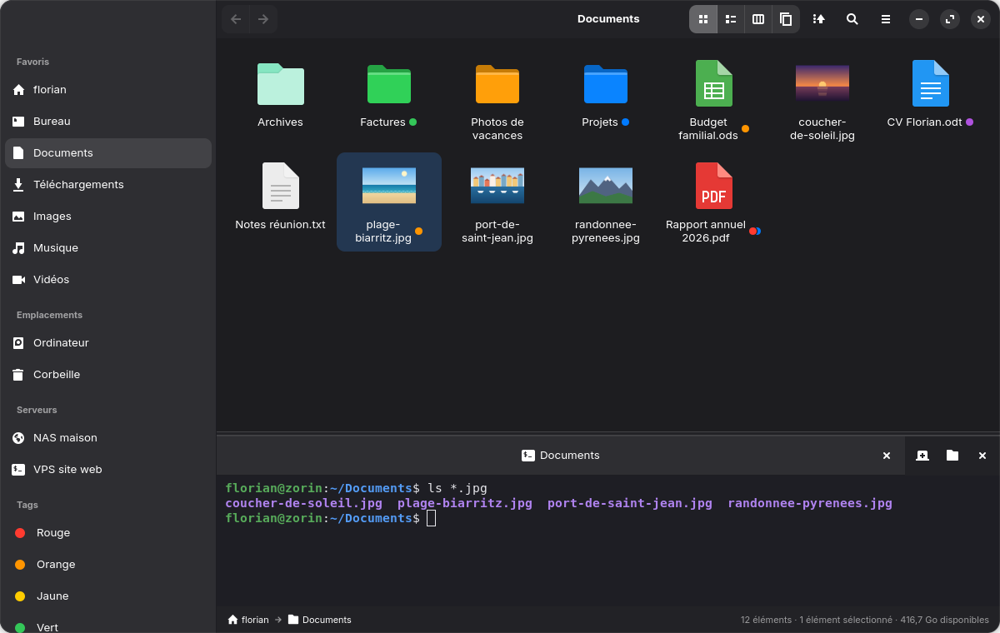
« Je n'ai jamais trouvé un explorateur de fichiers qui me convienne vraiment. Alors j'ai développé le mien, exactement comme je le voulais. »— Florian Dérail, créateur de Galet
Tout ce qui manquait sous Linux
Les meilleures idées du Finder d'Apple, adaptées à GNOME, sans changer vos habitudes.
Tags de couleur
Clic droit → une pastille. Tous les fichiers d'un même tag en un clic depuis la barre latérale.
4 présentations
Icônes, liste, colonnes avec aperçu, galerie. Chaque dossier retient la sienne.
Recherche façon Spotlight
Une grande barre (Ctrl+F), en mode simple ou IA : dans les noms, le contenu des documents et du code, et même ce que montrent vos photos.
Actions rapides
Pivoter, convertir, réduire une image, créer un PDF, compresser, extraire.
Confort
Annuler (Ctrl+Z), renommer sur place, onglets, glisser-déposer, Coup d'œil (Espace).
Dossiers colorés
Choisissez la couleur d'un dossier, ou laissez-le prendre celle de son tag.
Gestionnaire de serveurs
SFTP, SMB, FTP, WebDAV (Nextcloud, kDrive…) : une fiche par serveur, connexion en un clic, mot de passe dans le trousseau GNOME.
Terminal intégré
Un terminal sous vos fichiers (F4), ouvert dans le dossier affiché ou en SSH sur votre serveur.
Double panneau
Votre ordinateur d'un côté, le serveur de l'autre (F3) : glissez-déposez pour transférer.
Tout est chiffré
Liste des serveurs en AES-256, mot de passe maître facultatif, sauvegardes chiffrées.
Envoi vers le téléphone
Comme AirDrop, avec Zorin Connect ou GSConnect.
Thèmes
Système, macOS, Windows 11 ou le vôtre, en clair ou en sombre.
En images
Une vraie application GNOME, qui suit le style de votre bureau.
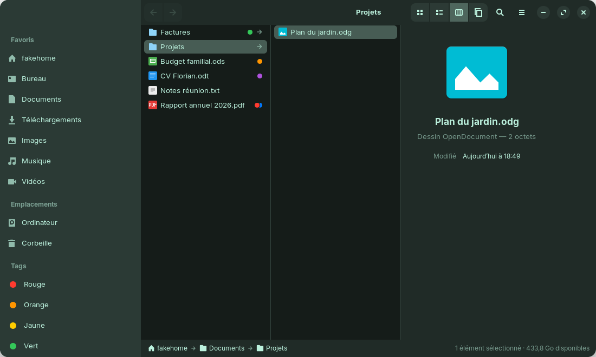
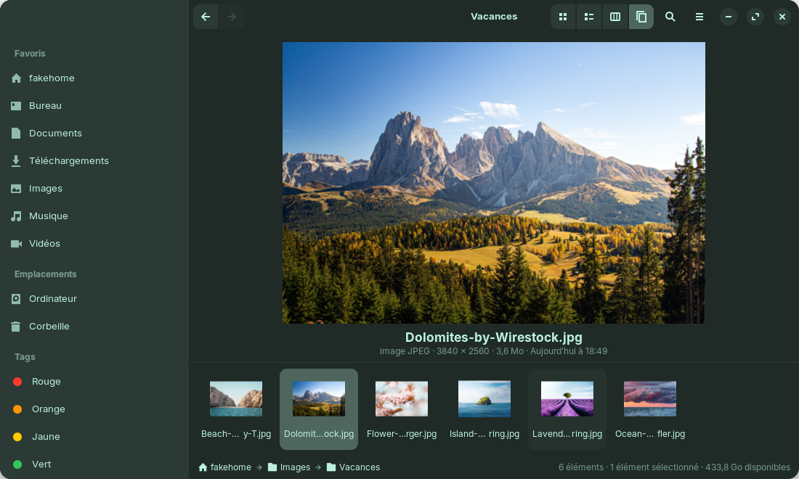
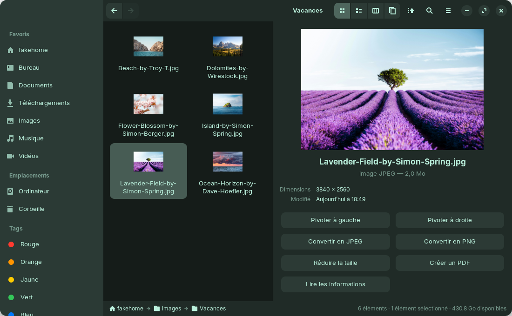
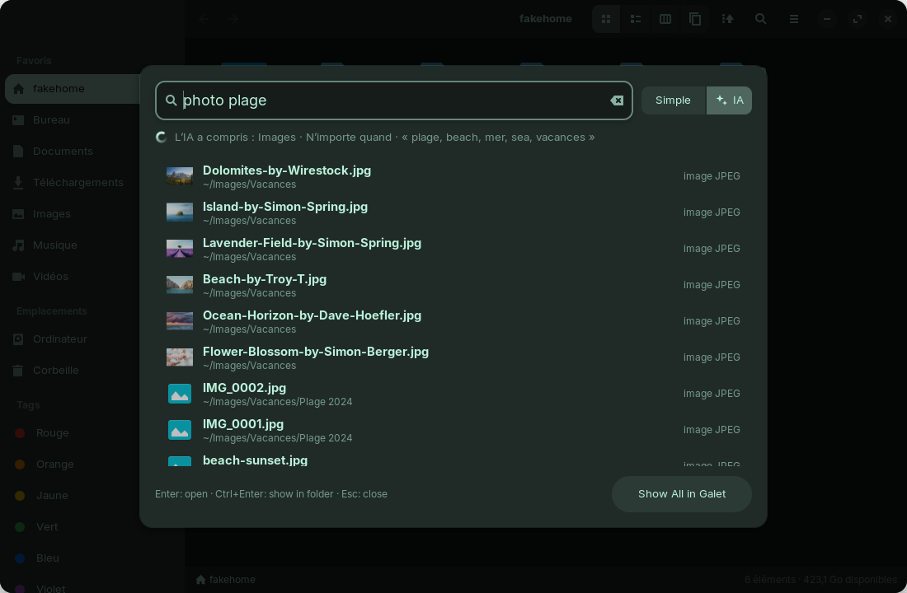
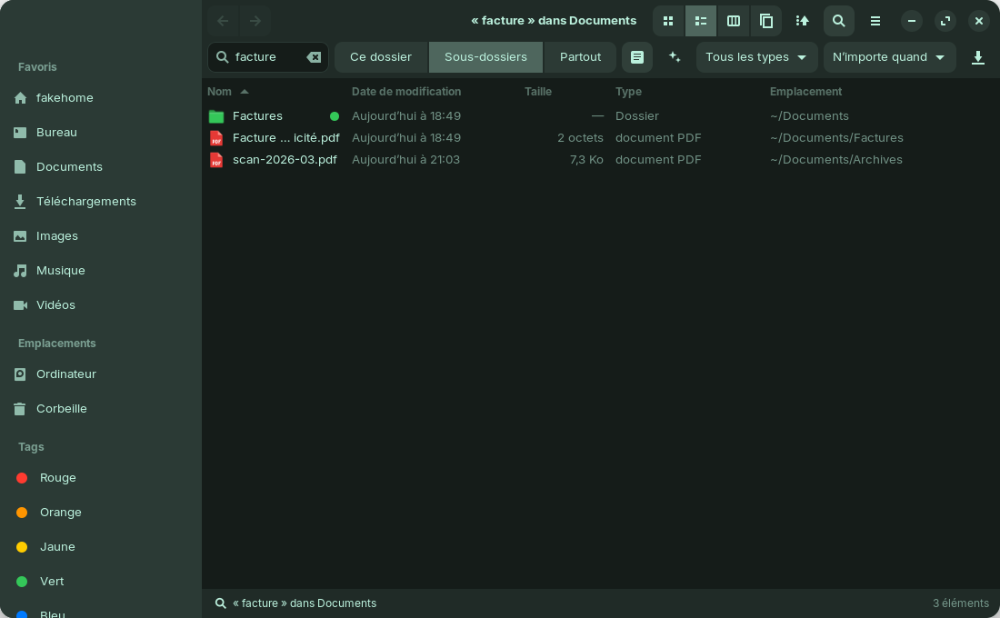
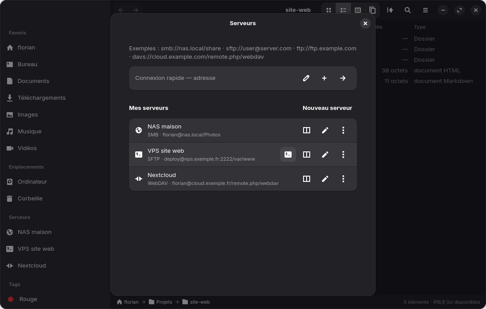
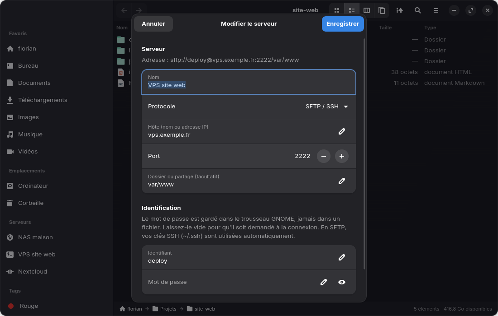
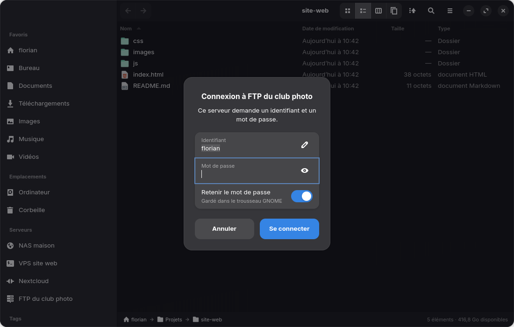
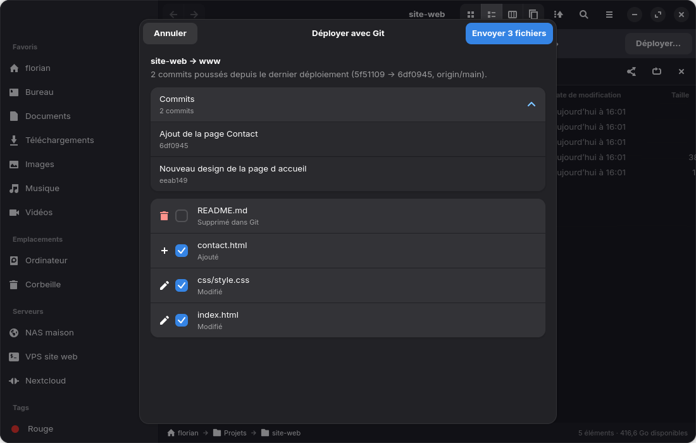
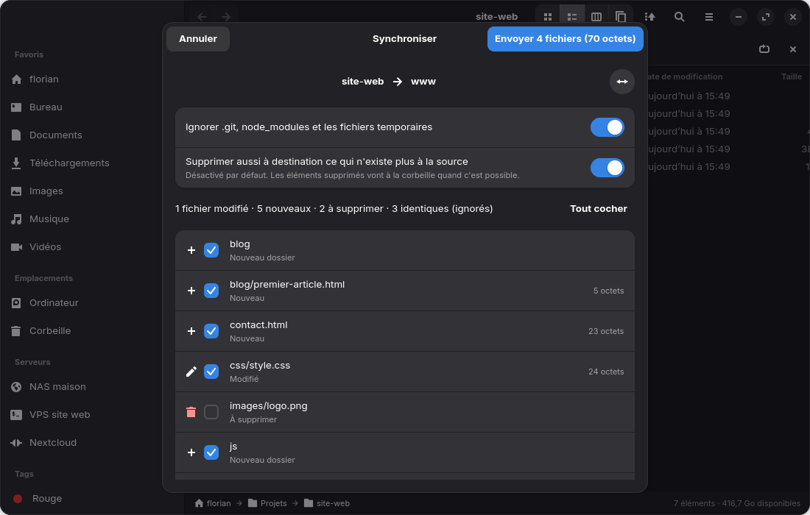
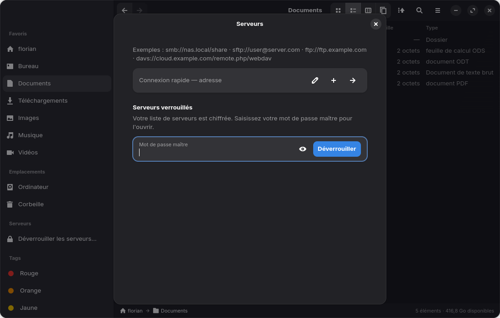
Serveurs, terminal et transferts
- Une fiche par serveur : protocole, hôte, port, dossier, identifiant — connexion en un clic
- Mot de passe dans le trousseau GNOME, liste des serveurs chiffrée (AES-256), mot de passe maître facultatif
- Terminal intégré (F4 ou Ctrl+²) : dans le dossier affiché, ou en SSH sur le serveur
- Double panneau (F3) : ordinateur à gauche, serveur à droite, glisser-déposer
- Fusionner / Synchroniser : n'envoyer que les fichiers nouveaux ou modifiés, avec aperçu
- Déployer avec Git : après un
git push, n'envoyer que les fichiers modifiés par les commits poussés
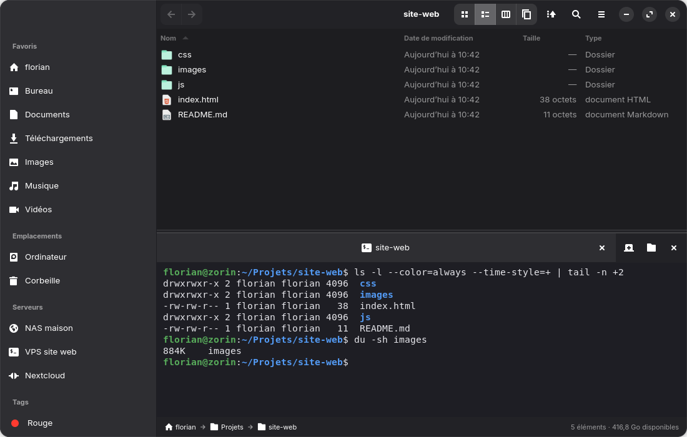
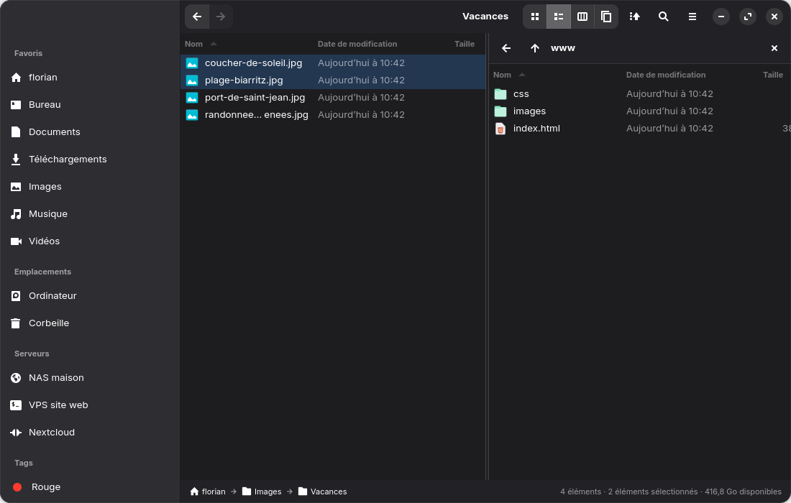
Transférer comme dans un client SFTP
Depuis le gestionnaire de serveurs, le bouton « Transférer » ouvre votre ordinateur d'un côté et le serveur de l'autre. Glissez-déposez, ou faites clic droit → « Copier de l'autre côté ». La progression s'affiche dans la barre d'outils, avec annulation.
Guide : serveurs, transferts et Git
Comment envoyer vos fichiers sur un serveur, n'envoyer que ce qui a changé, et déployer après un git push.
1 Ajouter un serveur
- Ctrl+K ouvre le gestionnaire de serveurs, puis Nouveau serveur.
- Choisissez le protocole (SFTP, SMB, WebDAV, FTP…), l'hôte, le port, le dossier et l'identifiant.
- Le mot de passe est facultatif : il est gardé dans le trousseau GNOME. En SFTP, vos clés SSH (
~/.ssh) sont utilisées automatiquement. - Le serveur apparaît dans la barre latérale : un clic et vous y êtes.
2 Ouvrir le double panneau
- F3 affiche un second panneau à droite, ou bouton Transférer ▥ sur la fiche du serveur (Ctrl+K).
- Votre ordinateur à gauche, le serveur à droite. Le côté actif est souligné en couleur ; la barre du bas suit ce côté.
- Chaque côté a ses boutons Précédent et Dossier parent.
3 Copier ou déplacer
- Glissez-déposez d'un côté à l'autre,
- ou clic droit → Copier de l'autre côté → / Déplacer de l'autre côté →.
- La progression s'affiche dans la barre d'outils, avec un bouton pour annuler.
4 Fusionner un dossier existant
Vous copiez www alors qu'il existe déjà sur le serveur ? Galet propose Fusionner (choix par défaut) :
- seuls les fichiers nouveaux ou modifiés sont copiés ;
- les fichiers identiques sont ignorés, rien n'est supprimé.
« Remplacer », lui, met l'ancien dossier à la corbeille et renvoie tout.
5 Synchroniser deux dossiers
- Dans le double panneau, bouton ⟳ ou clic droit → Synchroniser avec l'autre côté…
- Un aperçu liste ce qui va partir : modifiés et nouveaux (cochés), identiques (ignorés), plus récents à destination (décochés).
- Le bouton ⇄ inverse le sens pour récupérer depuis le serveur.
.git,node_moduleset fichiers temporaires sont ignorés. La suppression à destination est une option, désactivée par défaut et confirmée.
6 Terminal intégré
- F4 (ou Ctrl+²) ouvre un terminal sous les fichiers, dans le dossier affiché.
- Sur un serveur SFTP, il s'ouvre directement en SSH, dans le même dossier.
- Pendant que vous tapez, Ctrl+C, Ctrl+R, Ctrl+L… vont au terminal.
Déployer avec Git, pas à pas
Pour un site ou un projet suivi par Git : après un git push vers GitHub, Galet n'envoie sur le serveur
que les fichiers modifiés par les commits poussés depuis le dernier déploiement.
- Travaillez comme d'habitude, puis poussez :
git add . git commit -m "Nouvelle page Contact" git push
- Dans Galet, ouvrez le projet d'un côté du double panneau (F3) et le dossier du serveur (
www) de l'autre. - Une bannière annonce « 2 commits poussés depuis le dernier déploiement ». Cliquez sur Déployer… (ou le bouton ➦ de l'en-tête, ou clic droit → Déployer les commits poussés (Git)…).
- L'aperçu montre les commits et les fichiers : ajoutés et modifiés cochés, supprimés dans Git décochés par défaut. Validez.
Ce qui part
Le contenu exact du commit poussé (origin/main) : le serveur reflète ce qui est sur GitHub.
Ce qui ne part jamais
Vos modifications non commitées, vos commits pas encore poussés, les fichiers non suivis ou ignorés (.env, node_modules).
La première fois
Pas encore de référence : les fichiers suivis par Git sont comparés avec le serveur (taille et date), puis Galet retient le commit.
Mémorisé et chiffré
Le dernier commit déployé de chaque paire projet ↔ serveur est gardé dans le coffre chiffré, comme vos serveurs.
Débuter avec Git et GitHub
Jamais utilisé Git ? Voici tout ce qu'il faut, une seule fois. Galet n'a pas besoin de votre compte GitHub : il lit le projet sur votre ordinateur.
1 Installer et se connecter
Dans un terminal (F4 dans Galet) :
sudo apt install git gh gh auth login
Choisissez GitHub.com → HTTPS → Login with a web browser, copiez le code affiché, collez-le dans le navigateur et acceptez.
2 Dire à Git qui vous êtes
git config --global user.name "Votre Nom" git config --global user.email "vous@exemple.fr"
Une seule fois par ordinateur.
3 Mettre un projet sur GitHub
Dans le dossier du projet :
git init git add . git commit -m "Première version" gh repo create --source=. --private --push
Projet déjà sur GitHub ? gh repo clone votre-nom/projet le copie sur votre ordinateur.
4 Au quotidien
git add . git commit -m "Ce que j'ai modifié" git push
Puis, dans Galet, « Déployer… ». Le site est déjà en ligne ? Au premier déploiement, cliquez sur Le serveur est déjà à jour : rien n'est envoyé, et la fois suivante seuls vos nouveaux commits partent.
Comment Galet sait qu'un fichier a changé ? Pour Fusionner et Synchroniser :
sa taille a changé ou il est plus récent que celui du serveur (comme rsync). En SFTP, les dates sont conservées :
la comparaison est fiable. Pour Git, c'est la liste exacte des fichiers des commits (git diff).
Votre style : macOS, Windows ou le vôtre
- Thème macOS : pastilles rouge-orange-vert, couleurs du Finder
- Thème Windows 11 : boutons rectangulaires, couleurs de l'Explorateur
- Thème personnalisé : couleur, coins arrondis, police, boutons
- Clair, sombre ou automatique
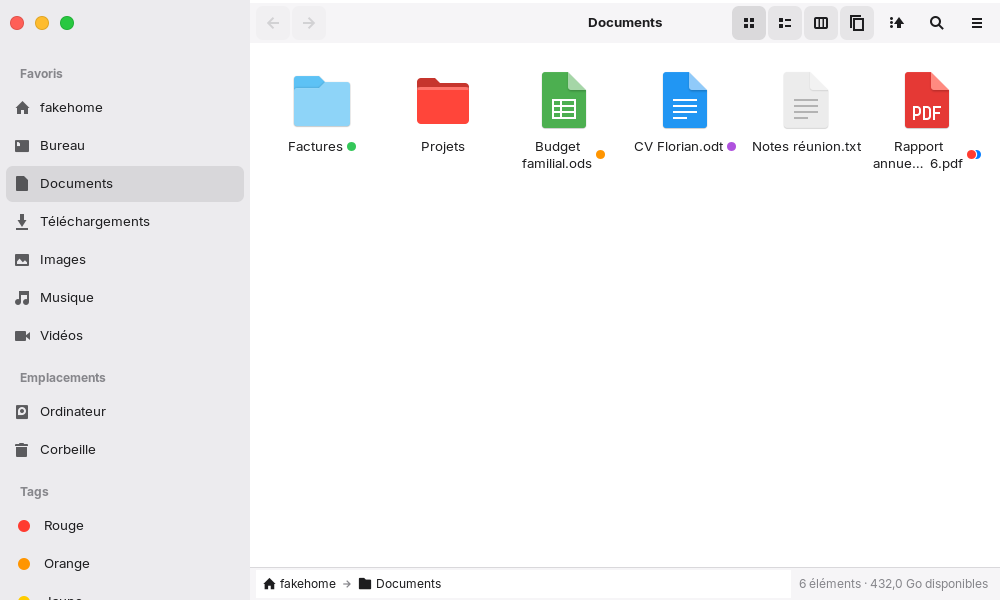
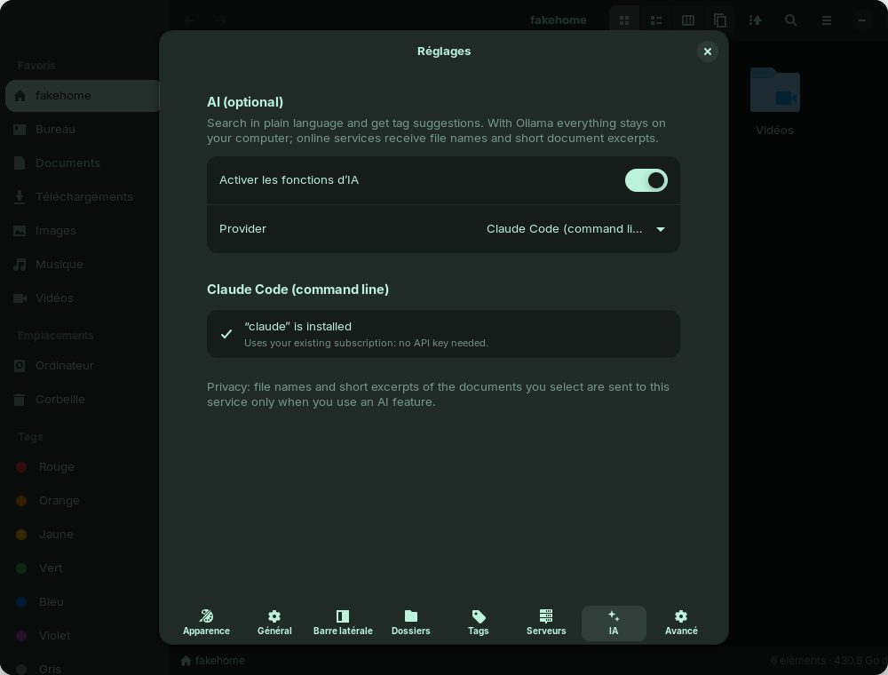
Une IA, seulement si vous le voulez
Cherchez en langage naturel (« les factures PDF de cette semaine », « un morceau de code qui lit du JSON »), faites décrire vos photos pour les retrouver par leur contenu (« photos de plage »), et obtenez des suggestions de tags. Désactivée par défaut. Avec Ollama, rien ne quitte votre ordinateur.
Télécharger Galet
Gratuit, sans compte, sans publicité. Il faut GTK 4.12+ et libadwaita 1.5+ (Zorin OS 17+, Ubuntu 24.04+, Fedora 40+).
🛍️ Le plus simple : la Logithèque
Cliquez sur le bouton : votre Logithèque (GNOME Logiciels, Zorin, Ubuntu…) s'ouvre sur la fiche de Galet. Cliquez sur « Installer ». Les mises à jour arrivent ensuite automatiquement.
🛍️ Installer dans la Logithèque
flatpak install --user --from https://floderail.github.io/galet/galet.flatpakref
Si le fichier se télécharge au lieu de s'ouvrir, double-cliquez sur galet.flatpakref. Les versions sont signées (clé FB3C 833A 7E51 613E).
1 Installer en une commande
Ouvrez un terminal (Ctrl+Alt+T) et collez :
sudo apt install git python3-gi python3-gi-cairo gir1.2-gtk-4.0 gir1.2-adw-1 gnome-sushi gir1.2-vte-3.91 gnupg git clone https://github.com/FloDerail/galet.git cd galet && ./install.sh
Galet apparaît ensuite dans le menu des applications. Pour en faire l'explorateur par défaut : ./install.sh --default
2 Ou télécharger l'archive
Téléchargez, décompressez, puis lancez ./install.sh dans le dossier.
Pour l'essayer sans rien installer : ./bin/galet
3 Ou le fichier Flatpak
Téléchargez le fichier, puis double-cliquez dessus : la Logithèque s'ouvre et installe Galet.
flatpak install --user galet.flatpak
Fonctionne sur toutes les distributions avec Flatpak. L'environnement GNOME est téléchargé automatiquement depuis Flathub.
Mettre à jour : cd galet && git pull && ./install.sh · Désinstaller : ./install.sh --remove ·
Tutoriel complet
Questions fréquentes
Galet remplace-t-il l'explorateur de mon système ?
Seulement si vous le souhaitez (./install.sh --default). Vous pouvez revenir à l'explorateur d'origine à tout moment avec xdg-mime default org.gnome.Nautilus.desktop inode/directory.
Où sont stockés mes tags ?
Dans les fichiers eux-mêmes (attribut étendu user.xdg.tags, norme freedesktop, compatible KDE Dolphin). Ils suivent le fichier quand vous le déplacez ou le renommez.
L'IA envoie-t-elle mes fichiers sur Internet ?
L'IA est désactivée par défaut. Avec Ollama, tout reste sur votre ordinateur. Si vous choisissez un service en ligne (Claude, Mistral, Gemini, ChatGPT), Galet vous prévient et n'envoie des noms de fichiers et de courts extraits que lorsque vous utilisez une fonction d'IA.
Galet sera-t-il sur Flathub ?
Plus tard. Flathub demande un historique de développement plus long. En attendant, le bouton « Installer dans la Logithèque » utilise le dépôt Flatpak officiel de Galet, signé, avec mises à jour automatiques.
Le déploiement Git envoie-t-il mes fichiers secrets (.env) ?
Non. Seuls les fichiers suivis par Git et modifiés par les commits poussés partent. Un .env non commité ou ignoré par .gitignore reste sur votre ordinateur.
J'ai poussé depuis un autre ordinateur : Galet le voit-il ?
Galet lit l'état de GitHub connu de votre ordinateur (origin/main). Faites d'abord un git pull (ou git fetch) dans le projet, puis rouvrez le double panneau.
Et si je réécris l'historique (force push) ?
Si le commit déployé n'existe plus, Galet repasse en « premier déploiement » : il compare les fichiers suivis par Git avec le serveur, puis retient le nouveau commit.
Mes mots de passe de serveur sont-ils en sécurité ?
Ils sont dans le trousseau GNOME, jamais dans un fichier. La liste des serveurs elle-même est chiffrée (AES-256), et vous pouvez la verrouiller par un mot de passe maître (Réglages → Serveurs → Sécurité).
Galet est-il gratuit ?
Oui, totalement. C'est un logiciel libre sous licence GPL-3.0 : vous pouvez l'utiliser, l'étudier, le modifier et le partager.
Comment signaler un bug ou proposer une idée ?
Sur la page Issues du projet. Joignez le fichier ~/.cache/galet/galet.log si possible.